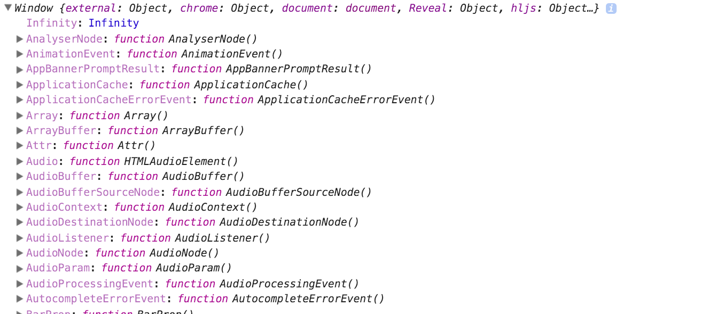
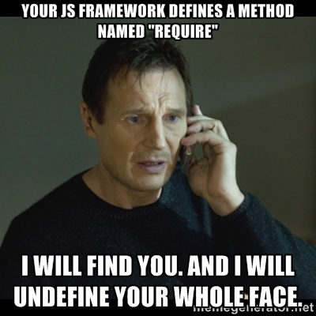
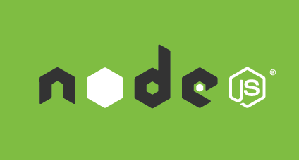

Modules in JavaScript
from dark ages to ES2015
Let's start with simple things
Agenda
- Global scope
- Module pattern
- Revealing module pattern
- CommonJS modules
- Browserify
- AMD (RequireJS)
- ES2015 (ES6, ES.Next, Harmony) modules
- Current state and support
- Questions?
- Demo overview
Global scope
JavaScript has two scopes: global and local. A variable that is declared outside a function definition is a global variable, and its value is accessible and modifiable throughout your program. A variable that is declared inside a function definition is local.
var a = 1; //global variable, becomes a property of window object also
function () {
var b = 2; // local variable
c = 3; //implicit global variable, will cause Error in strict mode
}
console.log(a); //1
console.log(window.a); //1
console.log(b); //undefined
console.log(window.b); //undefined
console.log(c); //3
console.log(window.c); //3There are many variables initially defined in global scope
You can accidently overwrite something
Global variable will not be eligible for collection until the global namespace loses scope.
Always beware that someone will declare the variable with the same name as yours and the app will work incorrectly
How can we deal with it?
Panic

Find the creator of bad code
Self-executing anonymous function
Creates local scope and executes it immediately
//Global scope is here
(function(){
//This is the local scope of the function, no globals are created
var hello = 'Hello World!'
console.log(hello);
//Function is immediatly executed after creation
})();Module pattern
The most commonly used design pattern and widely accepted in a number of large projects such as jQuery, Dojo, ExtJS and YUI.
Pros/Cons
- Supports private data
- Less clutter in the global namespace
- Private methods and functions lose extendability since they are unaccessible.
(function( window, undefined ) {
function MyModule() {
// `this` refers to the instance of `MyModule` when created
this.myMethod = function () {
alert( 'my method' );
};
}
// expose access to the constructor
window.MyModule = MyModule;
})( window );
// example usage
var myModule = new MyModule();
myModule.myMethod(); // alerts "my method"Revealing module pattern
The only difference from the module pattern is that this pattern was engineered as a way to ensure that all methods and variables are kept private until they are explicitly exposed.
Pros/Cons
- Supports private data
- Less clutter in the global namespace
- The syntax of our scripts are even more consistent
- Explicitly defined public methods and variables which lead to increased readability
- Private methods and functions lose extendability since they are unaccessible.
var myModule = (function( window, undefined ) {
function myMethod() {
alert( 'my method' );
}
// explicitly return public methods when this object is instantiated
return {
someMethod : myMethod
};
} )( window );
// example usage
MyModule.myMethod(); // undefined
MyModule.someMethod(); // alerts "my method"Standardization of the modules
EcmaScript 3 was released in December 1999 and EcmaScript 5 in December 2009. None of them contained the out of the box implementation of the modules. Module pattern interpretation differs from project to project, modules are hard to reuse.
CommonJS Modules specification
The CommonJS group defined a module format to solve JavaScript scope issues by making sure each module is executed in its own namespace. This is achieved by forcing modules to explicitly export those variables it wants to expose to the “universe”, and also by defining those other modules required to properly work.
CommonJS Syntax
To achieve this CommonJS give you two tools:
- the "require()" function, which allows to import a given module into the current scope.
- the "module" object, which allows to export something from the current scope.
math.js
exports.add = function() {
var sum = 0, i = 0, args = arguments, l = args.length;
while (i < l) {
sum += args[i++];
}
return sum;
};increment.js
var add = require('math').add;
module.exports = function(val) {
return add(val, 1);
};program.js
var inc = require('increment');
var a = 1;
inc(a); // 2Implementations of the spec
CommonJS modules' 'require()' function call will block the execution until the required module will be loaded into the memory and initialized. This approach cannot be used in the browsers, that's why CommonJS modules were applied to the node.js platform and become a standard there for a long time.
Pros/Cons
- Simple syntax - easy to use
- Execution in own context. Only explicit variables in the global namespace
- Modules format consistent and behavior is predictable
- NPM registry contains thousands of modules ready to use
- Dependencies can be stubbed during the testing.
- Synchronous execution
- Not supported in browsers
- Implemented in Node.JS only
Any thoughts about browsers?
If the mountain will not come to Mohammed, Mohammed must go to the mountain

Browsers don't have the "require()" method defined, but Node.js does. With Browserify you can write code that uses require in the same way that you would use it in Node by bundling up all of your dependencies into single JavaScript file.
How to use
Install Browserify from NPM
npm install -g browserifyCompile CommonJS module with all it's dependencies into bundle
browserify main.js --outfile=bundle.jsPros/Cons
- All benefits of CommonJS in browser (and even more with transforms)
- Ability to reuse server code (e.g. models, helpers)
- Knowledge of the Node.JS platform is recommended
- Build step is required
- Generated code is hard to read (without source maps)
Not all developers were ready to build their frontend. Not all of the projects have Node.JS as a backend.
Here comes AMD
Asynchronous Module Definition (AMD)
The API specifies a mechanism for defining modules such that the module and its dependencies can be asynchronously loaded. This is particularly well suited for the browser environment.
math.js
define([], function() {
return {
add: function() {
var sum = 0, i = 0, args = arguments, l = args.length;
while (i < l) {
sum += args[i++];
}
return sum;
};
});increment.js
define(['math'], function(math) {
return function(val) {
return math.add(val, 1);
};
});program.js
require(['increment'], function(increment) {
var a = 1;
inc(a); // 2
});Relations with CommonJS group
First version of AMD API started on the CommonJS wiki as a transport format, as Modules Transport/C, but it changed over time to also include a module definition API.
Consensus was not reached. The API was transferred over to its own wiki and discussion group.
Existing implementations:
- Dojo Toolkit
- ScriptManJS
- RequireJS
Pros/Cons
- Asynchronous loading
- Designed for browsers, but can be used on server as well
- Execution in function local scope. Only explicit variables in the global namespace
- Modules format consistent and behavior is predictable
- Dependencies are loaded only if required
- More boilerplate code in comparison to CommonJS
- Mocking of dependencies during testing is not easy
UMD (Universal Module Definition)
The UMD pattern typically attempts to offer compatibility with the most popular script loaders of the day (e.g RequireJS amongst others). In many cases it uses AMD as a base, with special-casing added to handle CommonJS compatibility.
It is possible to create UMD modules using Browserify:
browserify module.js --outfile=myModule.js --standaloneWaiting for out of the box module support in JavaScript
EcmaScript 2015 modules
The ES2015 (former ES6, ES.Next, Harmony) brought the native modules support to the JavaScript among the many other innovations.
math.js
export function add() {
var sum = 0, i = 0, args = arguments, l = args.length;
while (i < l) {
sum += args[i++];
}
return sum;
};increment.js
import { add } from 'math';
export default function(val) {
return add(val, 1);
};program.js
import inc from 'increment';
var a = 1;
inc(a); // 2Design goals
- Exporting of single item is favored over multiple
- Static module structure
- Support for both synchronous and asynchronous loading
- Support for cyclic dependencies between modules
Pros/Cons
- Very compact syntax
- Static module structure (helps with optimizations, static checking and more)
- Hopefully will end the fragmentation between the CommonJS and AMD (no more UMD)
- New browser APIs become modules instead of global variables or properties of navigator
- No more objects-as-namespaces (such as Math and JSON) for functions in ECMAScript 5
- No support in browsers and Node.JS for now
- Transpiling to CommonJS/AMD is required. A build step should be introduced
Current state
So where the modules will work?
| Modules | In browser | In Node.JS | In browser (build) | In Node (build) |
|---|---|---|---|---|
| CommonJS | - | + | + | |
| AMD | + | - | + | + |
| UMD | + | + | + | |
| ES2015 | - | - | + | + |
My way of dealing with modules
- Use ES2015 syntax for own modules
- Use babel transform to transpile modules to CommonJS syntax
- Use Browserify to wrap third-party CommonJS dependencies and get bundle
browserify src/index.js -t babelify | uglifyjs > public/bundle.js